Variabel dan Option Explicit
Variabel menyimpan nilai sementara. Option Explicit memaksa setiap variabel dideklarasikan sehingga salah ketik langsung ketahuan.
Dim nama As String Dim umur As Integer
Langkah praktik
- Tulis Option Explicit di baris pertama modul.
- Deklarasikan variabel dengan Dim nama As Tipe.
- Variabel di dalam Sub hanya berlaku di Sub itu (lokal).
- Variabel di bagian atas modul berlaku untuk semua Sub di modul itu; Public berlaku untuk seluruh proyek.
Tips
Tipe umum: String (teks), Integer dan Long (bilangan bulat), Double (desimal), Boolean (benar/salah).
Tangkapan layar praktik
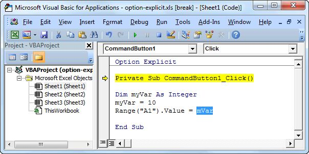
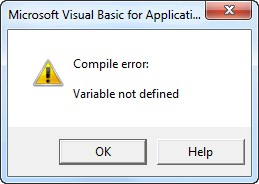
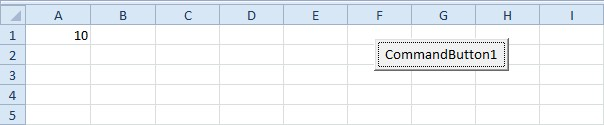
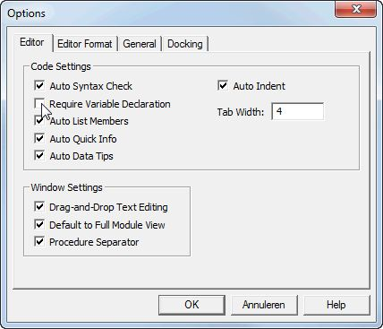
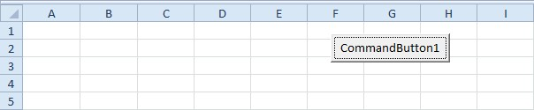
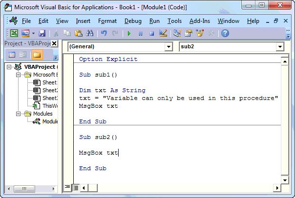
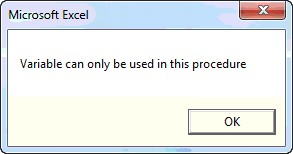
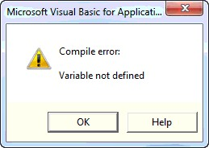
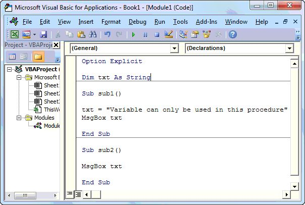
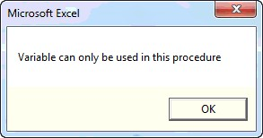
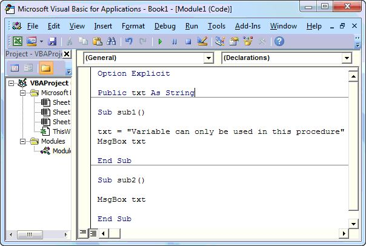
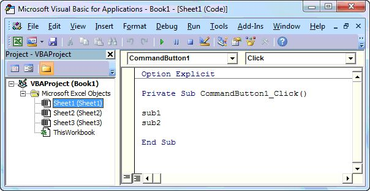